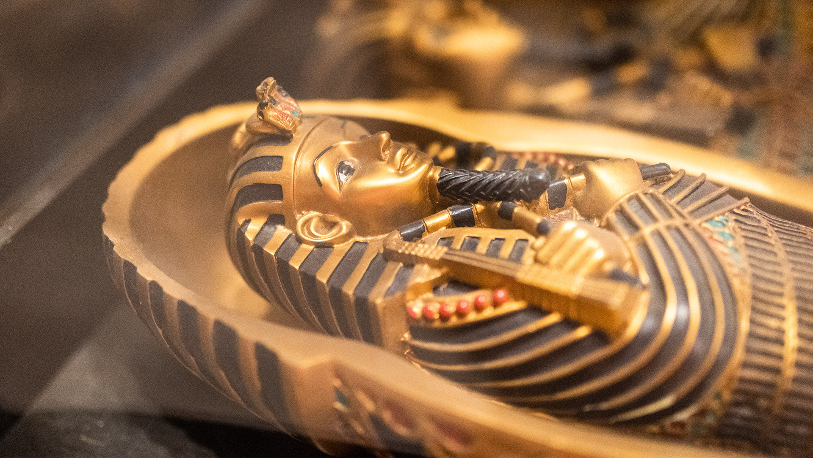
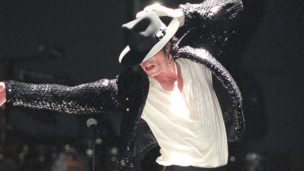

Log in
Sign up
YEMEK
FİLM ÖNERİLERİ
ARŞİV
BLOG
GALERİ
YAZI ARŞİVİ

Mumyalarla İlgili İlginç Bilgiler
Mumyalama, ölüm sonrasında bedeni kasıtlı olarak kurutarak veya bozulmaması için ilaçlayarak koruma sürecidir. Mumyalama uygulaması Mısır’da başlamadı. Mısır’daki mumyalardan 2000 yıl önce Güney Amerika’da Chinchorro kültüründe mumyalama görülmüştür. Antik Mısır’da hayvanlar da mumyalanıyordu. Mısırlıların mumyalama süreci 70 gün sürüyordu. Tutankamon’un mezarını keşfeden Lord Carnarvon, mezar açıldıktan birkaç hafta sonra zehirli sinek ısırığından ölmüştür. ‘Mumyanın Laneti’ miti bu olaydan gelir. Mumyanın kolları göğsünün üzerinde birleşiyorsa ölen kişi kraliyet ailesine mensuptur.
Birkaç Ünlü Komplo Teorileri
Prenses Diana'nın ölümü kaza değildi. Pek çok komplo teorisyeni 1997 yılında hayatını kaybeden Prens Charles’ın eşi Prenses Diana’nın aslında bir kaza sonucu ölmediğini tam aksine bir cinayete kurban gittiğini düşünüyor. Covid-19 insan üretimi. Elisa Lam’in Cecil Hotel’de öldürülmesi.Kanadalı öğrenci Elisa Lam’in 2013 yılında Los Angeles’taki Cecil Hotel’de kaybolmasının ardından pek çok komplo teorisi üretildi. Bunlara örnek olarak Lam’in yeni bir tüberküloz türü içeren biyolojik bir silaha denek olduğu, cehenneme açılan portallardan birine girmesi, şeytanla anlaşma yapmasını sayabiliriz. Hitler Arjantin'e kaçtı. Ay'a gidilmedi. UFO’lar 51. Bölgeye indi.

Michael Jackson'ın Son Günleri
24 Haziran 2009 Michael Jackson, yeni bir turne için hazırlanıyordu. Çok yoğun bir prova dönemine giren Jackson, uykusuzluktan şikayet ediyordu. AP haber ajansının haberine göre, Jackson dansçıları ile olan provadan ayrılarak evine doğru yola çıktı. Eve geldiklerinde koruması Doktor Murray’nin arabasını park halinde buldu. Birkaç gündür doktorun ziyaretleri sıklaşmıştı. Jackson eve varır varmaz çok yorgun olduğunu belirterek uyuması gerektiğini söyledi. 24 Ağustos 2009 Adli tıp uzmanı, Michael Jackson’ın vücudunda ölümcül bir karışım olan anestezik propofol ve yatıştırıcı bulunduğunu açıkladı.
Dünyayı değiştiren 10 bilim kadını ile tanışın!
İşte herkes tarafından bilinmesi gereken, yaptıkları sınırları aşan, buluşları ile tarihin seyrini değiştiren kadın bilimciler... Ada Lovelace, Matematikçi Marie Curie, Fizikçi ve Kimyager Janaki Ammal, Botanist Chien-Shiung Wu, Fizikçi Katherine Johnson, Matematikçi Rosalind Franklin, Kimyager Vera Rubin, Astronom Flossie Wong-Staal, Virolog ve Moleküler Biyolog Jennifer Doudna, Biyokimyager
Hızlı Saç Uzatmak için 8 Öneri!
Kestirdikçe uzar. Yatmadan önce saçlarınızı tarayın. Isıdan kaçının. Saçınızı her gün şampuanlamayın. Soğuk durulama yapın. Islak saçınızı özenle tarayın. Yastık kılıfınızı değiştirin. Beslenmenize dikkat edin.
Bağışıklığı Güçlendiren 15 Gıda
Bağışıklık sistemimizin görevi vücuda giren zararlı maddeleri tanıyıp onlarla savaşmaktır. Bu ancak öyle sanıldığı gibi kolay olmadığı gibi çok da karmaşık bir sistemdir. Bizi virüslere karşı daha güçlü yapacak yiyeceklere geçebiliriz. Narenciye, Kırmızı dolmalık biber, Brokoli Ispanak, Sarımsak, Zencefil Yoğurt, Badem, Ay Çekirdeği Zerdeçal, Yeşil Çay, Papaya Kivi, Kümes Hayvanları, Kabuklu Deniz Ürünleri
İletişim